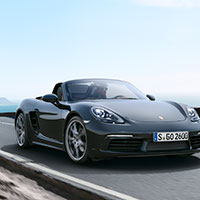

新闻中心


新闻中心
现场大图

梁朝辉@时尚集团，
宋海涛@汽车与你
梁朝辉@时尚集团:和英式豪华相悖的完美极简主义升级，德式感性是不应该被定义的。一堆眼花缭乱的配置，别告诉说你用不着，奢侈品，最没用的东西就是最重要的。
宋海涛@汽车与你：看到各路媒体大咖们纷纷发表各路感言，赞的、赞的和攒钱的，P家品牌在媒体中的号召力由此可见。外形是进化而多过创新，好看了，尤其尾部变得顺眼很多。
白宁@车主之友：全新Panamera造型比上一代全面提升，质感极佳，非常值得期待！
周展@速度周刊：这次设计师把保时捷911引为了设计的缪斯，一辆压扁的卡宴或许没人喜欢，但一辆四门911一定会是所有人的梦想。
于英钊@风度：唯一有点不顺眼的就是大灯，收得细长点就更好了。
新闻中心
更多官方资料，视频，高清大图... ...
拿好不谢。
Jojo Tang，
Casper Yuan，
李铭，
张博士
Jojo Tang:去充满科技感的保时捷先进驾驶舱，提前步入未来！
Casper Yuan：我就等限量版了，1:43的
Allen：帅～但是没钱～
Rachel：仿佛已经听到了 Turbo V8 引擎的轰鸣声… …
李铭：想带你去兜风～错，是想你带我去兜风～
张博士：听说屏幕比 Tesla 还大？很想体验一番。
奥博穆博士：通过Panamera，我们将不断深耕豪华四门GT这一细分市场。
方智勇先生：上代Panamera自2009年首发以来深受中国消费者的青睐，相信新款也将延续热卖。
刘加文@周末画报：猛一看似曾相识，仔细一看处处不同。4门大型豪华车在纽北7’38’’，恐怕也只有保时捷了。动力、内饰、外观全面革新，还有全新辅助驾驶系统。期待ing！
许群@Ramp：最喜欢的四个部分：更加保时捷跑车化的经典比例和线条，标准轴距就有足够宽大舒适的后座空间，高度美化、高科技化的中控系统，比上一代美20倍的车尾造型。
李铭@座驾：全新一代Panamera，纽北成绩7’38，与997 Turbo一样快了，而且还有比911更美艳的车尾～
李耕@轿车情报：传承于911 Carrera 4S的三维尾灯条将是未来保时捷的品牌特征元素，全面加大的车身更好地细化了车身线条。
陈鹏飞@Ramp：设计无暇，性能无解，波子，就酱～